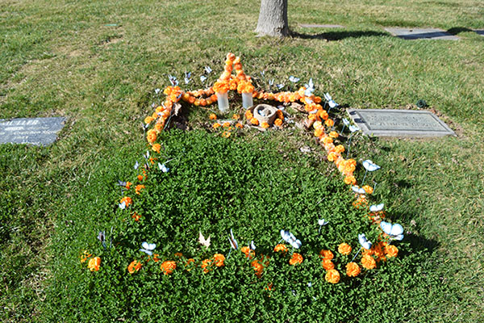
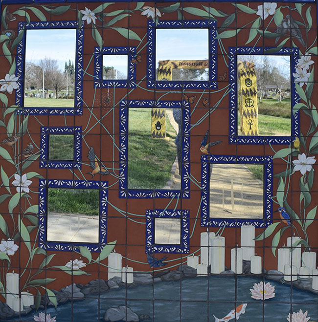
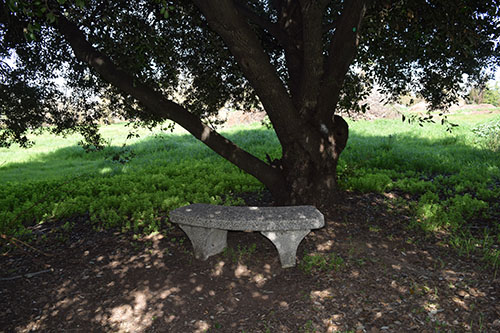
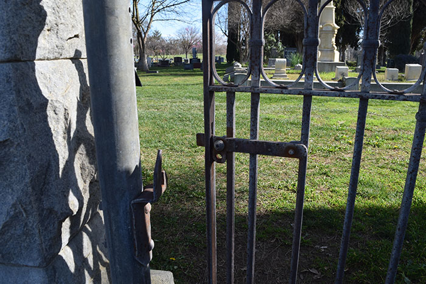
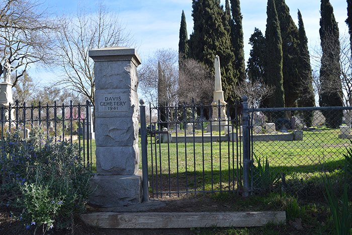

Sometimes I think resting all the time must be lonely, but here people remind me how loving they are. I wonder if the person who lies here loved carnations, orange, their hat, or blue butterflies. Either way, I feel they are loved, and seeing that love makes me feel like I know them. So now, I visit them!

This place can be liminal, but these mirrors and paintings bring me back to myself when I am lost in thought. They remind me that I am here, in this cemetery, and I have so much more life to live. When I need to face myself, this place will be here for me.

Welcome to my thinking bench! From this bench I can gaze out on the cemetery's garden. This time of year it is lush and green, the birds are chirping, the sunlight is dancing, and the wind is fresh. I love it here. Explore the area to find my runaway thoughts!

We'll miss you!
Aww, bye bye!

It's so nice to have a visitor! Please enter through the gate to get started.